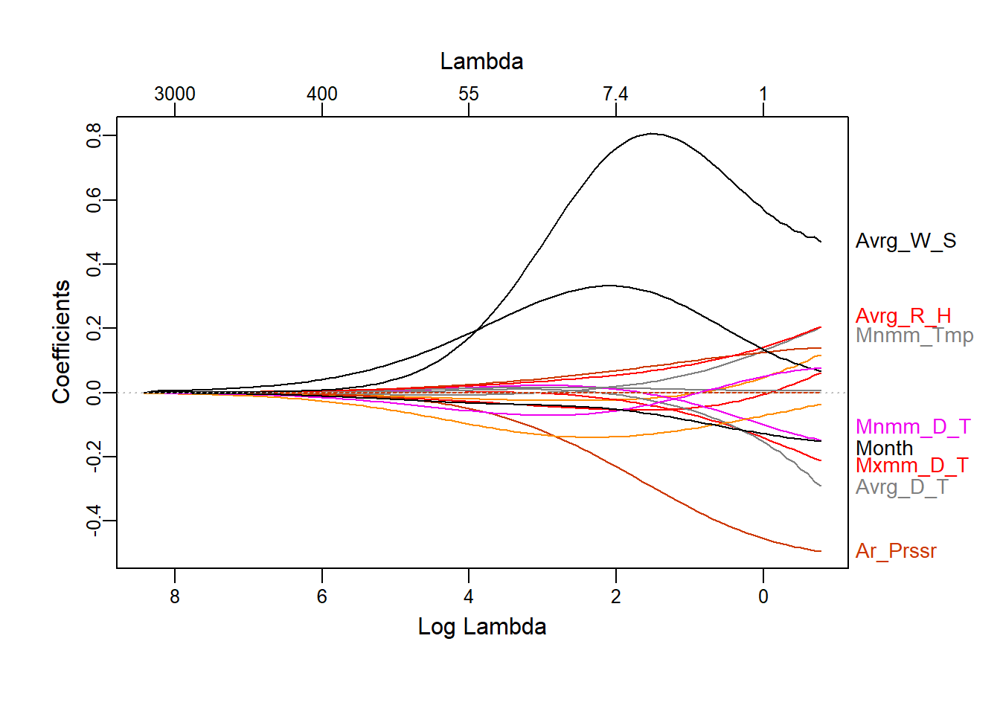
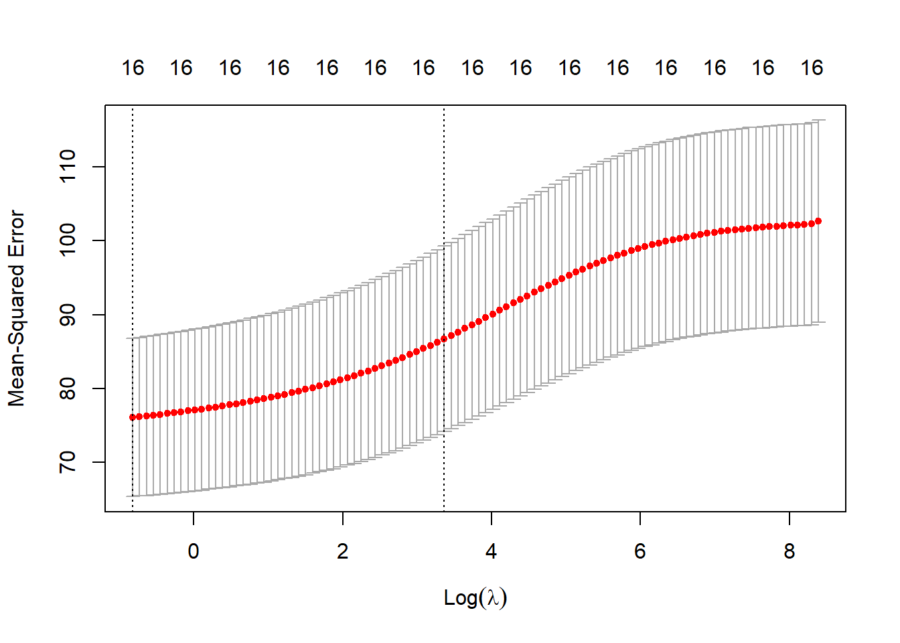
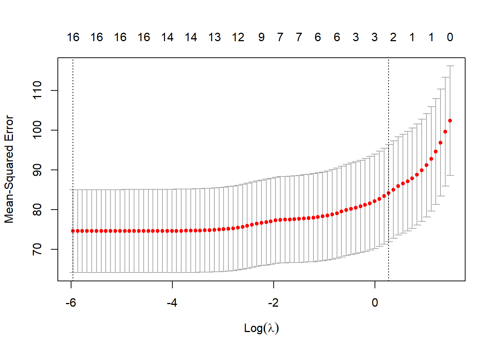
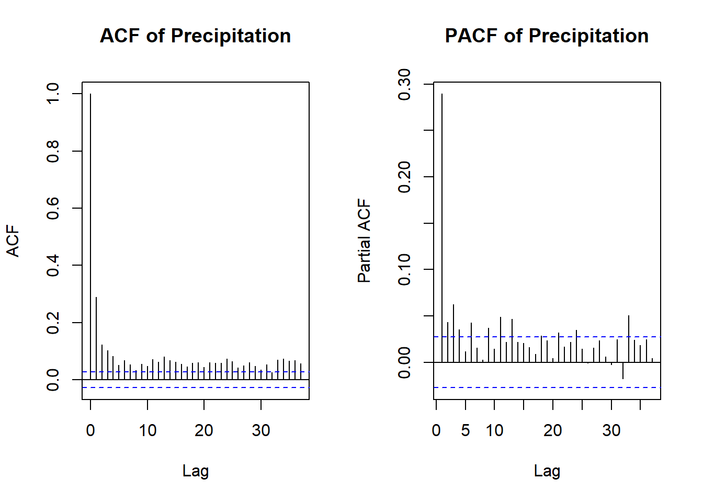
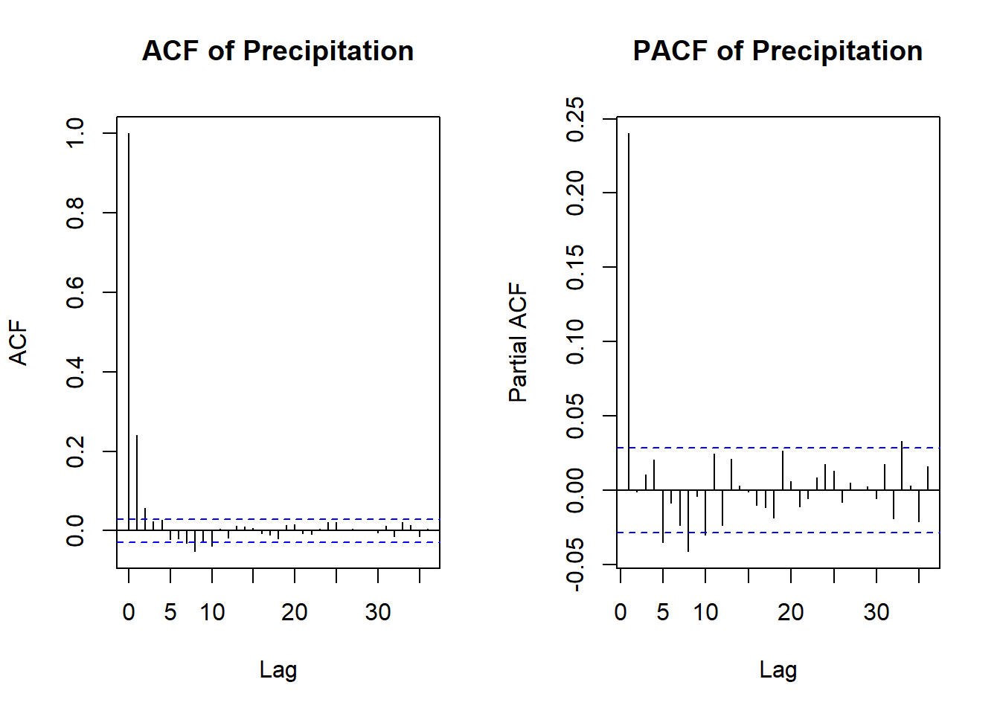
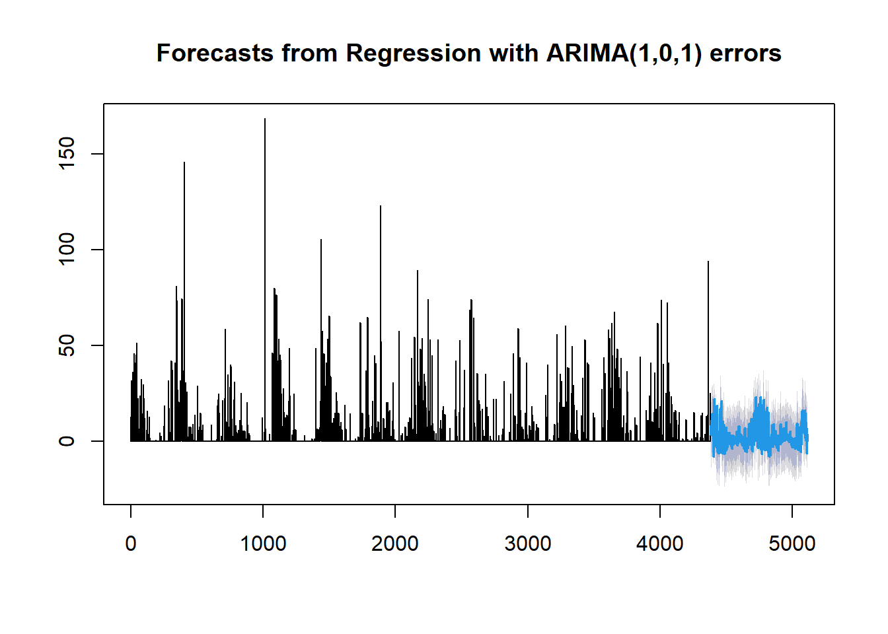
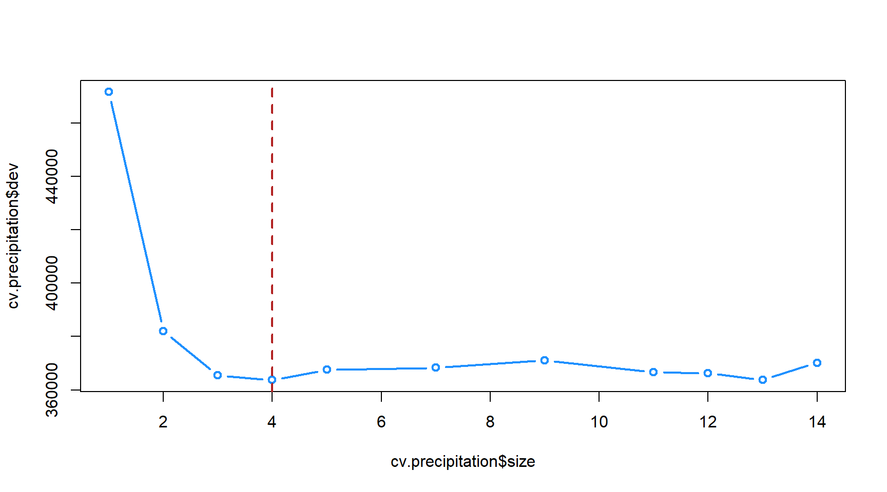
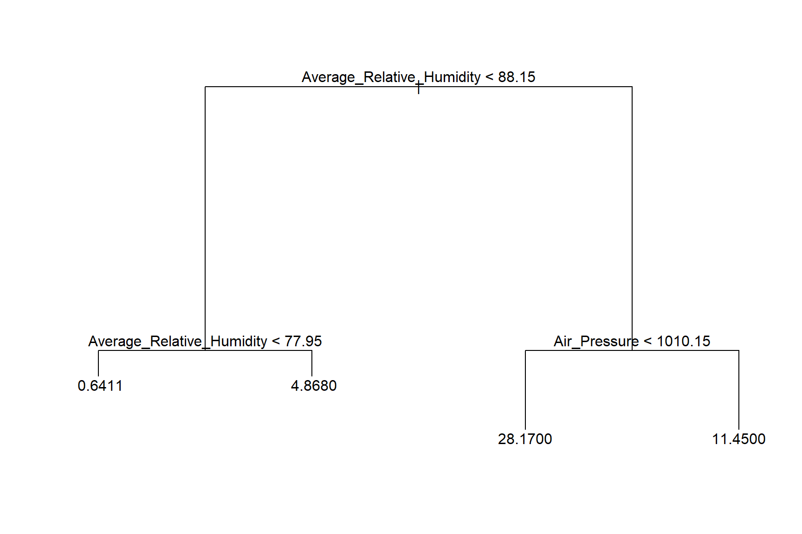

library(readxl)
library(tidyverse)
library(lubridate)
library(corrplot)
library(rnaturalearth)
library(sf)
library(ggplot2)
library(forecast)
library(tseries)
library(seasonal)
library(stats)
library(gridExtra)
library(grid)
library(glmnet)
library(ISLR)
library(plotmo)
library(MASS)
library(tree)
library(randomForest)
library(gbm)Daily Rainfall Modelling in one of the automated-weather observation station in Mugla Province of Türkiye
1 Introduction
Precipitation is one of the most important meteorological factors that have large impacts on human life and ecosystems worldwide in many ways such as freshwater, irrigation, hydropower production etc. As many authors have indicated that the nature of precipitation shows high variability in terms of both spatial and temporal scales (Domroes, Kaviani, and Schaefer 1998; F. 2002; Mitchell and Jones 2005). Therefore, studies on precipitation are very considerable particularly taking into account of climate change effects.
While the ARIMA model is effective for many time series analyses, incorporating seasonality and exogenous variables can significantly enhance its predictive power. However, since ARIMA assumes the time series is stationary, it is necessary to employ a different model for non-stationary data with seasonal patterns.
This is where the SARIMA (Seasonal ARIMA) model comes into play. Similar to the ARIMA model, SARIMA includes additional seasonal autoregressive and moving average components. These seasonal lags correspond to the periodicity of the data (e.g., 12 for monthly data, 24 for hourly data).
SARIMA models facilitate differencing by both seasonal and non-seasonal frequencies(Kim and Pachepsky 2010). Identifying the optimal parameters can be streamlined using automated parameter search frameworks such as pmdarima.
Tree decision models are one of the most natural and popular method to model categorical response variables, even these methods can also be used to model continuous responses. In the literature there are many studies that are used tree-based models to predict precipitation amounts, fill the missing data and categorize precipitation types (Choubin et al. 2018; Kim and Pachepsky 2010; Englehart and Douglas 2009; Wei, Yan, and Jones 2019).
Regularization is a technique used to prevent overfitting in statistical models by adding a penalty to the model complexity. In the context of regression models, shrinkage methods are a form of regularization that reduce the size of the coefficients towards zero, effectively shrinking them. This can enhance the model’s generalization to new data by avoiding overfitting.
Two common shrinkage methods are:
Ridge Regression (L2 regularization): Adds a penalty equal to the sum of the squared coefficients.
Lasso Regression (L1 regularization): Adds a penalty equal to the sum of the absolute values of the coefficients.
The SARIMA (Seasonal Autoregressive Integrated Moving Average) model is a powerful tool for time series forecasting that accounts for both non-seasonal and seasonal components. While SARIMA itself does not directly incorporate regularization methods like those used in regression, regularization can be applied in the context of model selection and parameter estimation to enhance the model’s performance.
Regularization in SARIMA:
Parameter Selection: Automated frameworks such as
pmdarimause regularization principles to optimize the selection of SARIMA parameters (p, d, q, P, D, Q, and s). These frameworks often employ criteria like the Akaike Information Criterion (AIC) or Bayesian Information Criterion (BIC), which inherently penalize model complexity to prevent overfitting.Ensemble Methods: Combining multiple SARIMA models with regularization techniques can help in stabilizing the predictions and improving the robustness of the model.
1.0.1 Tree Models and Regularization
Tree-based models, including Decision Trees, Random Forests, and Gradient Boosting Machines (GBMs), can benefit from regularization techniques to improve their performance and prevent overfitting.
Regularization in Tree Models:
Pruning (for Decision Trees):
Reduces the size of the tree by removing sections that provide little power in predicting target variables.
Can be achieved through cost-complexity pruning which penalizes the tree for having too many branches.
Hyperparameter Tuning:
Max Depth: Limiting the depth of the tree to prevent it from growing too complex.
Min Samples Split: The minimum number of samples required to split an internal node.
Min Samples Leaf: The minimum number of samples required to be at a leaf node.
Ensemble Methods:
Random Forests: Aggregate the predictions of multiple decision trees, reducing overfitting through averaging.
Gradient Boosting: Sequentially builds trees, where each new tree tries to correct the errors of the previous ones. Regularization in GBM can include:
Learning Rate: Controls the contribution of each tree.
Subsampling: Uses a subset of data for training each tree.
L1 and L2 Regularization: Adds penalties for the complexity of the model.
Regularization Parameters in Gradient Boosting:
Shrinkage: Similar to the learning rate, it scales the contribution of each tree added to the model.
Column Subsampling: Reduces overfitting by randomly selecting a subset of features for each tree.
This study is focused on daily rainfall modelling for Muğla Province by using meteorological observations.
2 Preliminary Preparations
2.0.1 Uploading Necessary Packages
2.1 Study Location & Data
In this study, Muğla Province is selected as the study area. This province is located in the southwestern part of Turkey, adjacent to the Mediterranean Sea, and is characterized by a Mediterranean climate with hot, dry summers and mild, wet winters. Muğla’s diverse topography, ranging from coastal areas to mountainous regions, makes it an ideal location for climatic and hydrological studies.
The meteorological station 17292, situated within Muğla Province, is operated by the Turkish State Meteorological Service (TSMS). This station has been consistently providing reliable climatic observations, including temperature, precipitation, humidity, and wind speed data, which are essential for understanding the local climate patterns and trends. The data collected from this station play a crucial role in various research studies, particularly those related to water resources management, agricultural planning, and climate change impact assessments in the region.
The figure below illustrates the precise location of meteorological station 17292 within Muğla Province. This visual representation aids in contextualizing the spatial distribution of climatic data collected and emphasizes the station’s strategic position for capturing representative climatic information for the entire province.
rnaturalearth::ne_countries(scale='medium',returnclass = 'sf') |>
ggplot() + geom_sf(fill = "white") +
geom_point(aes(x=28.3668,y=37.2095),size=4) + labs(x="",y="") +
coord_sf(crs = st_crs(4326), xlim = c(23, 31), ylim = c(35,39)) +
theme_bw() +
theme(legend.position = "none",
panel.background = element_rect(fill = 'aliceblue')) +
annotate(geom="text", x=29, y=35.5, label="MEDITERRANEAN SEA",
color="cornflowerblue", fontface = "bold.italic", size=4) +
annotate(geom="text", x=30, y=38.5, label="TURKIYE",
color="darkgray", fontface = "bold.italic", size=4) +
annotate(geom="text", x=23.1, y=38.4, label="GREECE",
color="darkgray", fontface = "bold.italic", size=4) +
annotate(geom="text", x=28.7, y=37.3, label="Mugla Station \n 17292",
color="black", fontface = "bold.italic", size=4)2.1.1 Data Handling
Data period is between 01.01.2009 and 31.12.2023 for Mugla Station (17292). Elevation of the station is 646 meter. Daily precipitation data is used as response variable in modelling. Distinct daily observation variables are used as predictors such as temperature (°C), dew point temperature (°C), sea-level air pressure (mb), cloud coverage (0-8), relative humidity (%), solar exposure (hour), solar radiation (W/m2) direction of wind (°) and speed (m/sec).
#complete eksik verileri tamamlama; date kolunu olusturduk vb.
files<- list.files(paste0(here::here(),"/DATA"), pattern = "xlsx")
listem<- list()
missdates<- list()
for(i in 1:length(files)) {
listem[[i]] <- read_excel( paste0(here::here(),"/DATA/", files[i]))
listem[[i]] <- listem[[i]][ ,-c(1,2)]
listem[[i]]<-
listem[[i]] |>
mutate(DATE= as.Date(with(listem[[i]], paste(YEAR,MONTH,DAY,sep="-")),"%Y-%m-%d")) |>
tidyr::complete(DATE = seq(as.Date("2009-01-01"),
as.Date("2023-12-31"), by = "day"))
listem[[i]] <- listem[[i]] [,-c(2:4)]
missdates[[i]]<- listem[[i]][which(is.na(listem[[i]] [,2] )),]
}
df<- listem[[1]]
for(i in 1:(length(files)-1)) {
df <- merge(df, listem[[i+1]], by = "DATE", all = TRUE)
}
write.table(df, "merge.txt", row.names = FALSE, quote = FALSE, sep = "\t")2.1.2 Descriptive Statistics
Precipitation: This is any form of water - liquid or solid - that falls from the atmosphere and reaches the ground. It includes rain, snow, sleet, and hail. It is usually measured in millimeters (mm).
Median: 0.000 mm
Mean: 3.192 mm
Maximum: 168.600 mm
Most days experience no precipitation, but there are occasional instances of heavy rainfall, with a maximum of 168.6 mm.
Temperature: This is a measure of the warmth or coldness of the atmosphere as determined by a thermometer. It is typically reported in degrees Celsius (°C).
Median (Minimum Temperature): 9.50°C
Mean (Minimum Temperature): 10.22°C
Maximum (Minimum Temperature): 27.90°C
Median (Maximum Temperature): 22.10°C
Mean (Maximum Temperature): 22.59°C
Maximum (Maximum Temperature): 41.70°C
The temperature ranges from cold to hot conditions, with mean temperatures around 10-15°C and maximum temperatures reaching as high as 41.7°C.
Dew Point Temperature: This is the temperature at which air becomes saturated with moisture and dew can form. It is an indicator of the moisture content in the air and is measured in degrees Celsius (°C).
Median: 4.50°C
Mean: 7.312°C
Maximum: 19.90°C
Dewpoint temperatures indicate varying levels of atmospheric moisture, ranging from dry to humid conditions.
Relative Humidity: This is the amount of moisture in the air compared to what the air can hold at that temperature. It is expressed as a percentage (%).
Median: 32.00%
Mean: 37.65%
Maximum: 100.00%
Relative humidity values show a wide range of humidity levels, from very dry to highly moist air.
Cloudiness: This refers to the extent of cloud cover in the skyor in descriptive terms such as clear, partly cloudy, mostly cloudy, or overcast.
Median: 2.000
Mean: 2.511
Maximum: 7.600
Cloudiness varies from clear to cloudy days, with a mean cloudiness value suggesting moderate cloud cover.
Wind Speed: This measures how fast the air is moving. It is typically reported in meters per second (m/s), kilometers per hour (km/h).
Median: 1.400 m/s
Mean: 1.418 m/s
Maximum: 4.700 m/s
Wind speeds are generally low, with occasional higher speeds recorded.
Wind Direction: This indicates the direction from which the wind is blowing. It is usually expressed in degrees (°) from true north or using compass directions (e.g., N, NE, E).
Mean: 209.3 degrees
Median: 176.0 degrees
Minimum: 1.0 degrees
Maximum: 360.0 degrees
NA’s (Missing Values): 111
These statistics indicate the average, middle, minimum, and maximum wind directions recorded in the dataset, measured in degrees from true north. The presence of missing values (NA’s) suggests that wind direction data is unavailable for some observations.
Evapotranspiration: This is the sum of evaporation from the land surface plus transpiration from plants. It represents the amount of water transferred from the land to the atmosphere. It is usually measured in millimeters (mm).
Median: 2.500 mm
Mean: 3.591 mm
Maximum: 17.700 mm
Evapotranspiration rates vary, reflecting differences in water loss from soil and plants.
Solar Radiation: This is the energy from the sun received at the Earth’s surface. It is typically measured in watts per square meter (W/m²).
Median: 4.000 MJ/m²
Mean: 4.124 MJ/m²
Maximum: 8.600 MJ/m²
Solar radiation fluctuates, affecting temperature and other weather parameters.
Sun Exposure: This refers to the duration and intensity of sunlight reaching a particular area. It is often measured in hours per day.
Median: 4.700 hours
Mean: 5.138 hours
Maximum: 12.200 hours
Sun exposure varies, reflecting differences in daylight duration.
Pressure: This is the force exerted by the atmosphere at a given point. It is usually measured in hectopascals (hPa) or millibars (mb).
Sea level pressure typically ranges around 1013.25 hectopascals (hPa) or millibars (mb), which is considered the standard atmospheric pressure at sea level. However, actual sea level pressure can vary depending on weather conditions:
- High Pressure Systems: These are usually associated with calm and fair weather. Sea level pressures in high-pressure systems typically range from about 1015 hPa to over 1040 hPa.
- Low Pressure Systems: These are associated with stormy and unsettled weather. Sea level pressures in low-pressure systems can drop below 1000 hPa, and in severe storms like hurricanes or typhoons, pressures can drop significantly lower, sometimes reaching around 950 hPa or even lower.
- Median: 1012.9 hPa
- Mean: 1013.3 hPa
- Maximum: 1033.5 hPa
- Air pressure values fall within typical sea-level pressure ranges, indicating relatively stable atmospheric conditions.
head(df) DATE PRECI MINTEMP MAXTEMP AVETEMP TDEWMIN TDEWMAX AVETDEW MINRELHUM
1 2009-01-01 0.0 -3.6 7.3 1.1 -10.8 -4.4 -6.9 39
2 2009-01-02 0.0 -4.9 7.4 0.4 -5.3 4.2 -0.7 62
3 2009-01-03 13.0 4.3 8.4 6.2 4.4 8.2 6.6 77
4 2009-01-04 22.6 6.8 9.9 7.8 6.7 9.3 7.9 99
5 2009-01-05 27.0 7.2 12.1 8.7 7.1 10.0 8.4 86
6 2009-01-06 25.8 5.3 11.2 7.8 4.8 10.8 6.8 94
MAXRELHUM AVERELHUM CLOUD PRESSURE AVEWINDD AVEWINDS EVAP RADIATION SUNTIME
1 69 50.2 0.0 1025.7 316 1.9 NA 2.1 3.2
2 96 81.4 4.7 1025.3 126 0.8 NA 1.0 0.2
3 99 96.0 7.0 1020.2 120 1.0 NA 0.3 0.0
4 99 99.0 7.0 1016.3 117 1.2 NA 1.0 0.6
5 99 98.3 7.0 1014.2 116 1.1 NA 1.1 0.5
6 99 98.8 6.9 1011.1 24 1.7 NA 0.6 0.1summary(df) DATE PRECI MINTEMP MAXTEMP
Min. :2009-01-01 Min. : 0.000 Min. :-8.20 Min. :-0.90
1st Qu.:2012-10-01 1st Qu.: 0.000 1st Qu.: 4.40 1st Qu.:14.60
Median :2016-07-01 Median : 0.000 Median : 9.50 Median :22.10
Mean :2016-07-01 Mean : 3.192 Mean :10.22 Mean :22.59
3rd Qu.:2020-03-31 3rd Qu.: 0.200 3rd Qu.:16.10 3rd Qu.:30.90
Max. :2023-12-31 Max. :168.600 Max. :27.90 Max. :41.70
NA's :5
AVETEMP TDEWMIN TDEWMAX AVETDEW
Min. :-5.30 Min. :-19.400 Min. :-13.30 Min. :-15.400
1st Qu.: 8.90 1st Qu.: 0.900 1st Qu.: 7.20 1st Qu.: 4.500
Median :14.90 Median : 4.500 Median : 10.30 Median : 7.700
Mean :15.77 Mean : 4.045 Mean : 10.07 Mean : 7.312
3rd Qu.:23.10 3rd Qu.: 8.000 3rd Qu.: 13.80 3rd Qu.: 11.100
Max. :34.10 Max. : 19.100 Max. : 25.50 Max. : 19.900
MINRELHUM MAXRELHUM AVERELHUM CLOUD
Min. : 0.00 Min. : 25.00 Min. :15.00 Min. :0.000
1st Qu.: 22.00 1st Qu.: 71.00 1st Qu.:47.40 1st Qu.:0.700
Median : 32.00 Median : 91.00 Median :64.20 Median :2.000
Mean : 37.65 Mean : 83.66 Mean :63.92 Mean :2.511
3rd Qu.: 49.00 3rd Qu.: 98.00 3rd Qu.:81.10 3rd Qu.:4.100
Max. :100.00 Max. :100.00 Max. :99.30 Max. :7.600
PRESSURE AVEWINDD AVEWINDS EVAP
Min. : 992.9 Min. : 1.0 Min. :0.000 Min. : 0.000
1st Qu.:1008.4 1st Qu.:123.0 1st Qu.:1.000 1st Qu.: 0.600
Median :1012.9 Median :176.0 Median :1.400 Median : 2.500
Mean :1013.3 Mean :209.3 Mean :1.418 Mean : 3.591
3rd Qu.:1017.4 3rd Qu.:315.0 3rd Qu.:1.800 3rd Qu.: 5.300
Max. :1033.5 Max. :360.0 Max. :4.700 Max. :17.700
NA's :111 NA's :111 NA's :2289
RADIATION SUNTIME
Min. :0.000 Min. : 0.000
1st Qu.:1.700 1st Qu.: 1.300
Median :4.000 Median : 4.700
Mean :4.124 Mean : 5.138
3rd Qu.:6.400 3rd Qu.: 8.800
Max. :8.600 Max. :12.200
NA's :377 NA's :139 2.1.3 Visualization of the Data
As stated above, relative humidity and cloud cloud coverage should be used as predictors while response is precipitation since the relationship is higher than other variables. However, predictor’s correlation between each other is also high whether positively or negatively. For example, correlation coefficient between cloud coverage and relative humidity is 0.67 or between maximum relative humidity and solar radiation is 0.72. This situation will most likely result in not needing to use many variables.
paletr<- c("#053061", "#2166AC" ,"#4393C3" ,"#92C5DE" ,
"#F4A582", "#D6604D" ,"#B2182B", "#67001F")
corrplot(round(cor(df[,2:18], method = "pearson", use = "complete.obs"),2),
method="color", col=paletr,
type="upper",
addCoef.col = "white",
tl.col="black", insig = "blank",
diag=FALSE )variable_names <-
c("Precipitation", "Minimum_Temperature", "Maximum_Temperature",
"Average_Temperature", "Minimum_Dewpoint_Temperature",
"Maximum_Dewpoint_Temperature", "Average_Dewpoint_Temperature",
"Minimum_Relative_Humidity", "Maximum_Relative_Humidity",
"Average_Relative_Humidity", "Cloudiness", "Air_Pressure",
"Average_Wind_Direction", "Average_Wind_Speed",
"Evapotranspiration", "Solar_Radiation", "Sun_Exposure")
colnames(df) <- append("Date", variable_names)
df_plot<-
df |>
pivot_longer(
cols = -c(1),
values_drop_na = FALSE)
df_plot$name <- factor(df_plot$name, levels = colnames(df)[2:18])
ggplot(df_plot, aes(x= Date, y=value,color=name)) +
geom_line(size=0.1) + facet_wrap(~name, scales = "free_y", ncol=3) +
theme_bw() + labs(x=" ",y=" ") +
theme(legend.position = "none",
strip.background = element_rect(fill="white")) ggplot(df_plot, aes(x= Date, y=value, fill=name, group=year(Date))) +
geom_boxplot(outlier.shape = NA, alpha=0.7) + facet_wrap(~name, scales = "free_y", ncol=3) +
theme_bw() + labs(x=" ",y=" ") +
theme(legend.position = "none",
strip.background = element_rect(fill="white")) In the case of the evapotranspiration dataset, it is imperative to acknowledge the presence of missing values. The temporal variability associated with seasonal patterns, such as temperature fluctuations, precipitation trends, and solar radiation changes, necessitates careful consideration during data analysis and interpretation.
MISSING DATA & EXTRACTION
2.2 EDA of the Precipitation
2.2.1 Missing Value
df_pre=df[,c(1,2)]
head(df_pre) Date Precipitation
1 2009-01-01 0.0
2 2009-01-02 0.0
3 2009-01-03 13.0
4 2009-01-04 22.6
5 2009-01-05 27.0
6 2009-01-06 25.8#Calculating the number of null values if there is one.
pre_null_values= sum(is.na(df_pre$Precipitation))
print(paste("Number of Null Values in Precipitation Column:",pre_null_values))[1] "Number of Null Values in Precipitation Column: 5"2.2.2 Time Series Plot of the Precipitation Data
missing_date= df_pre$Date[is.na(df_pre$Precipitation)]
missing_date[1] "2012-11-09" "2015-08-03" "2015-08-04" "2015-08-05" "2015-08-06"#Time Series Plot of Precipitation (with Missing Data Highlighted (2009-2024)
ggplot(df_pre, aes(x = Date, y = Precipitation)) +
geom_line(color = "red", size = 0.5,alpha=0.5) + # Continuous line plot
geom_smooth(method = "loess", se = FALSE, color = "orange", size = 1.5) + #Trend line
geom_point(aes(color = !is.na(Precipitation)), size = 1,alpha=0.5, shape = 21, fill = "white", show.legend = FALSE) +
geom_text(data = subset(df_pre, is.na(Precipitation)), aes(label = "NA", y = 0), vjust = -0.5, color = "blue",size= 3) + # Marking NAs
scale_color_manual(values = c("black", "red")) + # Red points for non-missing data
labs(title = "Time Series Plot of Precipitation Data (2009-2024)",
x = "Date",
y = "Precipitation (mm)") +
theme_minimal() +
theme(axis.text.x = element_text(angle = 45, hjust = 1),
plot.title = element_text(hjust = 0.5)) #Centering the title#Time Series Plot of Precipitation (with Missing Data Highlighted (2021-2024)
df_pre_p1= filter(df_pre, Date>= as.Date("2021-01-01"))
ggplot(df_pre_p1, aes(x = Date, y = Precipitation)) +
geom_line(color = "red", size = 1) + # Plotting the precipitation data
geom_point(aes(color = !is.na(Precipitation)), size = 2, shape = 21, fill = "white", show.legend = FALSE) +
scale_color_manual(values = c("orange", "red")) + # Use red points to mark non-missing data
labs(title = "Time Series Plot of Precipitation Data (2021-2024)",
x = "Date",
y = "Precipitation (mm)") +
theme_minimal() +
theme(axis.text.x = element_text(angle = 45, hjust = 1)) # Improve readability of x-axis labels
According to the time series plot of the precipitation, there is no specific long-term trend (orange line) over the years. 4 of the 5 null values are found sequentially and one of them is located in “2012-11-09”. The plot exhibits high volatility and also might be observed some seasonality (clearly observed in plot 2).
2.2.3 Seasonality Analyze
#Seasonal Decomposition
#Mean Imputation for NA values
df_pre1=df_pre
mean_imput=mean(df_pre1$Precipitation,na.rm=TRUE)
df_pre1$Precipitation[is.na(df_pre1$Precipitation)]=mean_imput
df_pre_ts= ts(df_pre1$Precipitation, frequency = 365)
result_stl <- stl(df_pre_ts, s.window = "periodic")
plot(result_stl)
ljung_box_result= Box.test(df_pre1$Precipitation, lag= 365, type= "Ljung-Box")
print(ljung_box_result)
Box-Ljung test
data: df_pre1$Precipitation
X-squared = 4280.5, df = 365, p-value < 2.2e-16Ho: No auto correlation for lags=365
H1: Some auto correlation for lags=365
Since the p-value is less than 0.05 we suggest that there is some autocorrelation for lags=365 in Precipitation data which is a strong indication of seasonality. Also, we can clearly observe seasonality in the Seasonality Component plot.
2.2.4 Stationarity Analyze
adf_test= adf.test(df_pre1$Precipitation, alternative = "stationary")
print(adf_test)
Augmented Dickey-Fuller Test
data: df_pre1$Precipitation
Dickey-Fuller = -12.942, Lag order = 17, p-value = 0.01
alternative hypothesis: stationaryHo: The time series is non-stationary
H1: The time series is stationary
Since our p-value is less than 0.05, it can be concluded that the time series is stationary. That means that the mean, variance and autocorrelation of the series do not change over the years. Since we satisfied the assumption of stationary we can perform Statistical Models as well as Machine Learning Approaches.
2.2.5 Monthly Total Means
df |>
mutate(Month = month(Date), Year = year(Date)) |>
group_by(Month, Year) |>
summarize(TotalPrecipitation = sum(Precipitation, na.rm = TRUE),
.groups = 'drop') |>
group_by(Month) |>
summarize(MeanPrecipitation = mean(TotalPrecipitation, na.rm = TRUE),
.groups = 'drop') |>
ggplot(aes(x=factor(month.name, levels=month.name),
y=MeanPrecipitation, group = 1)) +
geom_bar(stat = "identity", fill = "skyblue", color="navyblue") +
labs(x = "Month", y = "Precipitation (mm)") +
geom_line(color = "navyblue", size = 1) +
geom_point(color = "navyblue", size = 2) +
theme_bw() + theme(axis.text.x = element_text(angle = 45, hjust = 1))
3 Methodology
3.1 Ridge & Lasso Regularization
Hydrologists use a different time measurement compared to the traditional January-to-December calendar year. For those who model and monitor water movement in the environment, the year starts on October 1st and concludes on September 30th. This period is referred to as a water year. To better understand the numbering system, each month is assigned a numerical value starting from the beginning of the water year. The water year commences in October, thus October is designated as month 1. Consequently, subsequent months follow this sequence, with January being represented as month 4.
df_n<-
df |>
dplyr::select(!Evapotranspiration) |>
drop_na() |>
filter(Date < "2023-01-01" )
df_n$Month<-ifelse(month(df_n$Date)>=10,
month(df_n$Date)-9,
month(df_n$Date)+3)
x<- model.matrix(Precipitation ~. , df_n )[,-c(1:2)]
y<- df_n$Precipitation
set.seed(1)
#train <- sample(1:nrow(x), nrow(x)*0.8)
#train <- seq(1:4419)
train <- seq(1: nrow(df_n |> filter(Date < "2021-01-01" ) ) )
# RIDGE
grid <- 10^seq(10, -2, length=100)
ridge.mod <- glmnet(x[train,], y[train], alpha=0)
plot_glmnet(ridge.mod,label=8)ridge.pred <- predict(ridge.mod, s=4, newx = x[-train,])
mean( (ridge.pred - y[-train])^2 ) # mse[1] 73.67183# ten-fold cross-validation
set.seed(1)
cv.out <- cv.glmnet(x[train,], y[train], alpha=0)
plot(cv.out)
bestlambda <- cv.out$lambda.min ; bestlambda[1] 0.4392184ridge.pred <- predict(ridge.mod, s=bestlambda, newx = x[-train,])
mean( (ridge.pred - y[-train])^2 )[1] 69.49357out<- glmnet(x[train,], y[train],alpha=0)
predict(out,type="coefficients",s=bestlambda)17 x 1 sparse Matrix of class "dgCMatrix"
s1
(Intercept) 460.383948666
Minimum_Temperature 0.193974465
Maximum_Temperature 0.056172042
Average_Temperature 0.117465526
Minimum_Dewpoint_Temperature -0.163577443
Maximum_Dewpoint_Temperature -0.171714928
Average_Dewpoint_Temperature -0.287541813
Minimum_Relative_Humidity 0.146014534
Maximum_Relative_Humidity 0.004352156
Average_Relative_Humidity 0.200326824
Cloudiness 0.061818532
Air_Pressure -0.470274958
Average_Wind_Direction -0.001109263
Average_Wind_Speed 0.577117843
Solar_Radiation 0.007868464
Sun_Exposure 0.073783086
Month -0.154203399pp<- predict(out, newx = x[-train,], type = "response", s=bestlambda)
pp2<- ifelse(pp < 0, 0, pp ) ## eksi tahminleri sıfıra eşitledik
plot(y[-train], pp2)# LASSO
lasso.mod <- glmnet(x[train,],y[train], alpha=1)
plot_glmnet(lasso.mod,label=8)set.seed(1)
cv.out=cv.glmnet(x[train ,],y[train],alpha=1)
plot(cv.out)
bestlam=cv.out$lambda.min ; bestlam[1] 0.002572511lasso.pred <- predict(lasso.mod, s=4, newx = x[-train,])
mean( (lasso.pred - y[-train])^2 )[1] 94.67503lasso.pred=predict(lasso.mod,s=bestlam ,newx=x[-train,])
mean((lasso.pred-y[-train])^2)[1] 68.86685out<- glmnet(x[train,], y[train],alpha=1)
predict(out,type="coefficients",s=bestlam)17 x 1 sparse Matrix of class "dgCMatrix"
s1
(Intercept) 4.450810e+02
Minimum_Temperature 3.009011e-02
Maximum_Temperature 1.588191e-01
Average_Temperature 1.056947e+00
Minimum_Dewpoint_Temperature 7.878162e-02
Maximum_Dewpoint_Temperature -6.202769e-02
Average_Dewpoint_Temperature -1.596246e+00
Minimum_Relative_Humidity 1.253405e-01
Maximum_Relative_Humidity -2.779996e-02
Average_Relative_Humidity 5.097391e-01
Cloudiness 1.221550e-01
Air_Pressure -4.798007e-01
Average_Wind_Direction -9.389233e-04
Average_Wind_Speed 9.731138e-01
Solar_Radiation 1.206147e-02
Sun_Exposure 6.370167e-02
Month -1.620786e-01pp_2<- predict(out, newx = x[-train,], type = "response", s=bestlam)
pp2_2<- ifelse(pp_2 < 0, 0, pp_2 )
plot(y[-train], pp2_2)- Ridge Regression
MSE score is found??77.69??with chosen best lambda??which??is 0.433. According to the plot of the relationship between lambda and coefficients, Average wind speed took the highest coefficient??which??means there is a strong relationship between precipitation. Also, we??penalized??each variable and average wind speed most to avoid bias and overfitting.??Anyway,??we get poor performance on Ridge regression by looking at the plot of actual and predicted values.??Since our precipitation exhibits non-linearity and??it??recognises??rainy days as??spikes??we should think about non-linear solutions like random forest, neural network??etc.
- Lasso Regression
We get similar results when we compare with the results of Ridge regression. Unlike the usual, no variables shrunk towards zero.??This??means each variable is highly correlated and affects the predictor variable with the chosen??of??the optimal??lambda value. Because of??that??can’t we use Lasso regression as a feature selection phase?
Do we need to scale both regreesion and revise the process?
3.2 Tree-Based Methods
3.2.1 Fitting Regression
df_tree<- df_n[,-1]
tree.precipitation <- tree(Precipitation~.,df_tree, subset=train)
summary(tree.precipitation)
Regression tree:
tree(formula = Precipitation ~ ., data = df_tree, subset = train)
Variables actually used in tree construction:
[1] "Average_Relative_Humidity" "Air_Pressure"
[3] "Month" "Average_Wind_Speed"
[5] "Maximum_Temperature"
Number of terminal nodes: 10
Residual mean deviance: 60.71 = 246500 / 4060
Distribution of residuals:
Min. 1st Qu. Median Mean 3rd Qu. Max.
-67.910 -0.634 -0.634 0.000 -0.634 121.900 Notice that the output of summary() indicates that only five of the variables have been used in constructing the tree. Relative humidity, air pressure and month variables become the most important ones, as we expected except cloudiness. In the context of a regression tree, the deviance is simply the sum of squared errors for the tree. We now plot the tree.
plot(tree.precipitation)
text(tree.precipitation,pretty=0)
Now we use the cv.tree() function to see whether pruning the tree will improve performance. K-fold cross validation technique is preformed to prune the regression tree. The minimum deviance is available where number of terminal nodes is 4. Thus, we can prune the regression tree from 10 to 4 terminal nodes.
set.seed(1)
cv.precipitation <- cv.tree(tree.precipitation);cv.precipitation$size
[1] 10 9 8 6 5 4 3 2 1
$dev
[1] 332615.6 327297.8 324067.8 326608.8 324331.5 318885.9 325263.1 334403.1
[9] 417780.2
$k
[1] -Inf 4555.490 5960.282 6456.620 7022.787 9649.365 14640.983
[8] 27054.240 89204.423
$method
[1] "deviance"
attr(,"class")
[1] "prune" "tree.sequence"plot(cv.precipitation$size, cv.precipitation$dev,
type='b', col="dodgerblue", lwd=2)
abline(v = which.min(rev(cv.precipitation$dev)), col="firebrick", lwd=2, lty=2)
In this case, the four-node tree is selected by cross-validation. Thus, we can prune the tree, we could do so as follows, using the prune.tree() function:
prune.precipitation <- prune.tree(tree.precipitation,best=4)
plot(prune.precipitation)
text(prune.precipitation,pretty=0)
In keeping with the cross-validation results, we use the unpruned tree to make predictions on the test set.
yhat <- predict(tree.precipitation,newdata=df_tree[-train,])
df_tree.test <- df_tree[-train,"Precipitation"]
plot_test<-
data.frame(yhat, df_tree.test) |>
ggplot(aes(x= yhat, y=df_tree.test)) +
theme_bw() +
geom_point(size=2, alpha=0.5, color="dodgerblue") +
geom_abline() +
labs(x="Predicted Response",y="True Response") +
annotate("text", x=60, y=20, label=
paste("MSE is",
round(mean((yhat - df_tree.test)^2),2)))
plot_test
In other words, the test set MSE associated with the regression tree is 64.19. The square root of the MSE is therefore around 8.01, indicating that this model leads to test predictions that are within around 8.01 mm of the true median precipitation value for the Mugla Station.
yhat_prune <-predict(prune.precipitation,newdata=df_tree[-train,])The MSE and RMSE for pruned tree are estimated as 73.2 and 8.56, respectively. Due to the nature of regression trees the predictions equal to averages of response variables in training data based on embranchment of the tree. In our example, predictions are available for five and 4 variables for unpruned and pruned cases, respectively.
3.2.2 Bagging and Random Forests
Here we apply bagging and random forests to the our data, using the randomForest package in R. Recall that bagging is simply a special case of a random forest with m = p. Therefore, the randomForest() function can be used to perform both random forests and bagging. The argument mtry=16 indicates that all 16 predictors should be considered for each split of the tree.
set.seed(1)
bag.precipitation <- randomForest(Precipitation ~., data=df_tree, subset=train, mtry=16,importance=TRUE)
bag.precipitation
Call:
randomForest(formula = Precipitation ~ ., data = df_tree, mtry = 16, importance = TRUE, subset = train)
Type of random forest: regression
Number of trees: 500
No. of variables tried at each split: 16
Mean of squared residuals: 71.12541
% Var explained: 30.66The Random Forest model consists of 500 decision trees. MSE on training data for the last tree is estimated as 71.12541. Percentage of variance in the target variable value of 30.66% indicates that the model explains about 30.66% of the variance in precipitation. The explained variance of 30.66% suggests that the model captures about a third of the variability in precipitation based on the provided predictors. This is a moderate level of explanatory power, indicating that while the model is capturing some of the relationships, there is still a significant portion of variability that it doesn’t explain.
yhat.bag = predict(bag.precipitation, newdata=df_tree[-train,])
data.frame(yhat.bag, df_tree.test) |>
ggplot(aes(x= yhat, y=df_tree.test)) +
theme_bw() +
geom_point(size=2, alpha=0.5, color="dodgerblue") +
geom_abline() +
labs(x="Predicted Response",y="True Response") +
annotate("text", x=60, y=20, label=
paste("MSE is",
round(mean((yhat.bag - df_tree.test)^2),2)))
The test set MSE associated with the bagged regression tree is 60.15, this is almost 20% lower than that achived using an optimally-pruned single tree.
Growing a random forest proceeds in exactly the same way, except that we use a smaller value of the mtry argument. By default, randomForest() uses p/3 variables when building a random forest of regression trees, and p1/2 variables when building a random forest of classification trees. Here we use mtry = 7
set.seed(1)
rf.precipitation <- randomForest(Precipitation ~., data=df_tree, subset=train, mtry=7,importance=TRUE)
yhat.rf = predict(rf.precipitation, newdata=df_tree[-train,])
round(mean((yhat.rf - df_tree.test)^2),2)[1] 55.59importance(rf.precipitation) %IncMSE IncNodePurity
Minimum_Temperature 16.160678 14778.44
Maximum_Temperature 9.845887 20956.25
Average_Temperature 9.374431 16525.34
Minimum_Dewpoint_Temperature 13.542117 14001.32
Maximum_Dewpoint_Temperature 15.573700 14343.46
Average_Dewpoint_Temperature 15.028109 14144.06
Minimum_Relative_Humidity 8.076360 45179.71
Maximum_Relative_Humidity 19.352939 18790.17
Average_Relative_Humidity 16.963041 81998.60
Cloudiness 12.660491 20328.04
Air_Pressure 24.139181 51233.80
Average_Wind_Direction 5.647770 21234.88
Average_Wind_Speed 10.076902 21711.69
Solar_Radiation 9.785292 15123.42
Sun_Exposure 10.015703 10597.99
Month 8.743882 11755.50The test set MSE is 55.59; this indicates that random forests yielded an improvement over bagging in this case. Using the importance() function, we can view the importance of each variable. Two measures of variable importance are reported. The former is based upon the mean decrease of accuracy in predictions on the out of bag samples when a given variable is excluded from the model. The latter is a measure of the total decrease in node impurity that results from splits over that variable, averaged over all trees. In the case of regression trees, the node impurity is measured by the training RSS. Plots of these importance measures can be produced using the varImpPlot() function.
varImpPlot(rf.precipitation)The results indicate that across all of the trees considered in the random forest, the air pressure (mb) and the maximum relative humidity (%) are by far the two most important variables.
3.2.3 Boosting
Here we use the gbm package, and within it the gbm() function, to fit boosted regression trees to the our data set. We run gbm() with the option distribution=“gaussian” since this is a regression problem, shrinkage parameter/learning rate is taken as 0.03. The argument n.trees=5000 indicates that we want 5000 trees, and the option interaction.depth=6 limits the depth of each tree.
set.seed(1)
boost.precipitation = gbm(Precipitation ~.,
data = df_tree[train,],
distribution = "gaussian",
shrinkage = .03,
interaction.depth=6,
n.trees = 5000)
summary(boost.precipitation)[2]
rel.inf
Average_Relative_Humidity 23.391199
Air_Pressure 13.940102
Minimum_Relative_Humidity 7.402162
Average_Wind_Speed 6.965498
Average_Wind_Direction 5.967477
Minimum_Temperature 5.665308
Maximum_Temperature 5.268572
Cloudiness 4.722548
Solar_Radiation 4.557934
Maximum_Dewpoint_Temperature 3.708303
Average_Temperature 3.433266
Minimum_Dewpoint_Temperature 3.330333
Maximum_Relative_Humidity 3.154003
Average_Dewpoint_Temperature 3.042658
Sun_Exposure 2.880234
Month 2.570404We see that average relative humidity and air pressure variables are the most important variables. Now we can use the boosted model to predict daily precipitation on the test data.
yhat.boost <- predict(boost.precipitation,newdata=df_tree[-train,],n.trees=5000,interaction.depth=6)
round(mean((yhat.boost - df_tree.test)^2),2)[1] 54.74The test MSE of boosted model obtained is 54.74 and it is superior to the test MSE for random forests and bagging.
4 Evaluation Metrics
5 Results and Conclusion
Eshel and Farrell (Eshel and Farrell 2000) investigated rainfall variability over Eastern Mediterranean and they showed that rainfall is mostly depend on pressure anomalies. Lower air pressure is mostly related with precipitation since mostly frontal systems brings rainfall over Eastern Mediterranean. These frontal systems also means windy storms which comes from over Mediterranean Sea. Similarly, relative humidity is highly related with precipitation since rainfall formation is much easier in saturated air conditions. As everyone might guess cloud is necessary for rainfall production. By the way, dew point temperature means that how much air should be cooled to be saturated without any moisture addition. Thus, closer dew point temperature and air temperature means highly saturated and vice versa. As stated above, relative humidity, cloud coverage, air pressure, dew point temperature, wind direction, wind speed and temperature should be used as predictors while response is precipitation. However, only relative humidity, air pressure and wind direction parameters are used in our pruned trees. This situation most probably caused because of predictor’s correlation between each other. Correlation matrix of variables is given in Figure 11. As shown in the Figure, some variables are highly correlated with each other whether positive or negative. For example, correlation coefficient between cloud coverage and relative humidity is 0.7 and -0.6 between dew point temperature and air pressure. Thus, using many variables has become unnecessary.
References
Choubin, Bahram, Gholamreza Zehtabian, Ali Azareh, Elham Rafiei-Sardooi, Farzaneh Sajedi-Hosseini, and Özgür Kişi. 2018. “Precipitation Forecasting Using Classification and Regression Trees (CART) Model: A Comparative Study of Different Approaches.” Environmental Earth Sciences 77 (8). https://doi.org/10.1007/s12665-018-7498-z.
Domroes, M., M. Kaviani, and D. Schaefer. 1998. “An Analysis of Regional and Intra-Annual Precipitation Variability over Iran Using Multivariate Statistical Methods.” Theoretical and Applied Climatology 61 (3-4): 151–59. https://doi.org/10.1007/s007040050060.
Englehart, Phil J., and Arthur V. Douglas. 2009. “Diagnosing Warm-Season Rainfall Variability in Mexico: A Classification Tree Approach.” International Journal of Climatology 30 (5): 694–704. https://doi.org/10.1002/joc.1934.
Eshel, Gidon, and Brian F. Farrell. 2000. “Mechanisms of Eastern Mediterranean Rainfall Variability.” Journal of the Atmospheric Sciences 57 (19): 3219–32. https://doi.org/10.1175/1520-0469(2000)057<3219:moemrv>2.0.co;2.
F., Giorgi. 2002. “Variability and Trends of Sub-Continental Scale Surface Climate in the Twentieth Century. Part i: Observations.” Climate Dynamics 18 (8): 675–91. https://doi.org/10.1007/s00382-001-0204-x.
Kim, Jung-Woo, and Yakov A. Pachepsky. 2010. “Reconstructing Missing Daily Precipitation Data Using Regression Trees and Artificial Neural Networks for SWAT Streamflow Simulation.” Journal of Hydrology 394 (3-4): 305–14. https://doi.org/10.1016/j.jhydrol.2010.09.005.
Mitchell, Timothy D., and Philip D. Jones. 2005. “An Improved Method of Constructing a Database of Monthly Climate Observations and Associated High-Resolution Grids.” International Journal of Climatology 25 (6): 693–712. https://doi.org/10.1002/joc.1181.
Wei, Wenguang, Zhongwei Yan, and Phil D. Jones. 2019. “A Decision-Tree Approach to Seasonal Prediction of Extreme Precipitation in Eastern China.” International Journal of Climatology 40 (1): 255–72. https://doi.org/10.1002/joc.6207.